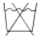
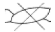
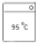

세탁기능사 (2005-01-30 기출문제)
1과목: 세정이론
1. 세탁물 보전기능의 유지를 위하는데 가장 상관이 먼 것은?
- 상품의 구조
- 상품의 기능 원리
- 상품의 기능 내용
- 상품의 제조방법
(정답률: 78%)

2. 케찹의 오점 분류는 어디에 해당되는가?
- 유용성
- 수용성
- 표백성
- 불용성
(정답률: 79%)
3. 화재발생 시 소화기를 사용하는 방법으로 틀린 것은?
- 화재의 종류에 맞는 소화기를 사용한다.
- 가급적 화점 가까이 접근하여 사용한다.
- 비로 쓸듯이 골고루 뿌린다.
- 바람을 마주보고 소화기를 사용한다.
(정답률: 84%)
4. 다음 섬유 중 세탁 시 오염이 제일 잘 제거되는 섬유는?
- 레이온
- 나일론
- 양모
- 면
(정답률: 82%)
5. 다음 중 더러움이 심한 용제를 침전법으로 청정화하는데 가장 적합한 청정제는?
- 여과제
- 활성탄소
- 활성백토
- 탈산제
(정답률: 57%)
6. 용제관리에서 세정액의 청정화방법에 해당되지 않는 것은?
- 여과
- 증류
- 부착
- 흡착
(정답률: 57%)
7. 다음 중 드라이클리닝 용제의 특징로 맞는 것은?
- 석유 용제 - 기계부식에 안정하고, 비중도 적어 독성이 약하며 저가이다.
- 불소계 용제 - 저온건조(50℃ 이하)가 가능하므로 내열성이 낮은 의류도 세탁이 가능하고 저가이다.
- 퍼크로에틸렌 - 기름에 대한 용해력이 적고 상압으로 증류할 수 없다.
- 1.1.1 트리클로로에탄 - 상압으로 증류되므로 진공 증류가 필요없고 독성이 없다.
(정답률: 61%)
8. 양이온계 계면활성제의 쓰임으로 적당하지 않은 것은?
- 세척제
- 발수제
- 유화제
- 대전 방지제
(정답률: 70%)
9. 섬유의 재가공 시 섬유를 부드럽게 하여 착용감을 높이려는 가공방법은?
- 방곰팡이가공
- 유연가공
- 방오가공
- 표백가공
(정답률: 81%)
10. 비누의 특성 중 장점이 아닌 것은?
- 세탁효과가 우수하다.
- 세탁한 직물의 촉감이 양호하다.
- 거품이 잘 생기고 헹굴때는 거품이 사라진다.
- 가수분해되어 유리지방산을 생성한다.
(정답률: 83%)
11. 다음 중 재오염의 주요 원인이 아닌 것은?
- 용제 및 세제를 사용하지 않을 때
- 용제중에 소프양이 적당하지 않을 때
- 용제중에 염료가 분산되어 있을 때
- 수분의 양이 과다할 때
(정답률: 53%)
12. 다음중에서 특수세정에 해당되지 아니하는 것은?
- 파우더 세정
- 초음파 세정
- 샤워 세정
- 용제 세정
(정답률: 48%)
13. 다음 중 기술 진단이 아닌 것은?
- 클리닝 방법의 진단
- 부속품 및 장식품의 확인
- 오점 및 얼룩제거의 진단
- 특수 의류 또는 패션 의류의 진단
(정답률: 70%)
14. 다음 중 의류에 방충 가공제를 부착하여 방충효과를 내는 것은?
- 장뇌
- 나프탈린
- 아레스린
- 파라디클로로벤젠
(정답률: 55%)
15. 용제에 관한 관계 습도를 가장 잘 표현한 것은?
- 용제중에 가용화된 수분의 상태
- 용제와 수분의 평형상태 습도
- 물에 용해된 용제의 농도
- 용제 중 녹일 수 있는 물의 양
(정답률: 51%)
16. 합성용제를 사용한 세정기에 관한 것이다. 잘못된 것은?
- 세정, 탈액, 건조의 작업이 가능하다.
- 콘덴서로 회수되지 않은 용제증기를 탈취시 흡착한다
- 세정부에는 필터장치가 없는 것이 특징이다.
- 건조시 발생한 용제의 증기는 콘덴서에 의하여 회수된다.
(정답률: 50%)
17. 오점 제거 방법이 잘못된 것은?
- 과일즙의 얼룩은 드라이클리닝으로 제거한다.
- 수용성 얼룩은 물 또는 세제를 사용한다.
- 녹물은 수산으로 처리 한다.
- 유용성 얼룩은 석유계 또는 합성용제를 사용하여 제거한다.
(정답률: 74%)
18. 클리닝의 기술적인 효과와 가장 거리가 먼 것은?
- 수용성 오점 제거
- 유성 오점 제거
- 불용성 오점 제거
- 박테리아 제거
(정답률: 84%)
19. 드라이클리닝한 후 섬유에 곰팡이가 발생하지 않도록 처리하는 가공법을 무엇이라고 하는가?
- 방충 가공
- 방미 가공
- 풀먹임 가공
- 방균 가공
(정답률: 48%)
20. 보일러 사용시 99.1℃ 에서의 증기압은 얼마인가?(단, 단위는 kg/㎝2)
- 1
- 2
- 3
- 4
(정답률: 88%)
2과목: 기술관리
21. 펌프의 능력에서 액심도 3까지 소요되는 시간이 얼마 이내가 양호한가?
- 1분20초
- 60초
- 45-60초
- 45초
(정답률: 89%)
22. 드라이클리닝 기계의 설명 중 잘못된 것은?
- 용제를 청정, 회수, 재사용할 수 있는 구조로 되어 있다.
- 석유계 용제용은 완전 방폭형 구조이어야 한다.
- 합성 용제용은 기밀장치가 있어야 바람직하다.
- 기계는 반드시 부식에 견디는 재질이 아니어도 무방하다.
(정답률: 78%)
23. 웨트클리닝 처리법 중 틀린 것은?
- 웨트클리닝은 색이 빠지거나 형이 일그러지는 것에 주의해야 한다.
- 웨트클리닝은 손빨래, 솔빨래, 기계빨래, 오염을 닦아내는 것 등이 있다.
- 웨트클리닝의 대상이 되는 의류는 종류가 많고 성질도 다르나 처리법은 다 같다.
- 웨트클리닝은 마무리 다림질을 생각하여 형이 흐트러지지 않게 빠는 것이 중요하다.
(정답률: 76%)
24. 웨트클리닝으로 적합하지 않은 것은?
- 합성피혁 제품
- 고무를 입힌 제품
- 안료염색된 제품
- 염색 제품
(정답률: 60%)
25. 옷을 건조하는 방법 중 좋지 못한 것은?
- 건조기에서 말린다.
- 공기나 햇볕에서 말린다.
- 건조실에서 말린다.
- 세탁기에서 말린다.
(정답률: 76%)
26. 일반적으로 가장 많이 사용하는 양복의 세탁법은?
- 물세탁으로 한다.
- 론드리로 한다.
- 드라이클리닝을 한다.
- 가정용 세탁기로 한다.
(정답률: 83%)
27. 퇴색 가능성이 있는 색상의 의류를 웨트클리닝 하려고 할 때 아래 약품 중 어느 것을 사용하여야 퇴색을 방지하는데 가장 효과적인가?
- 계면활성제
- 수산
- 빙초산
- 알콜
(정답률: 50%)
28. 거품의 작용에 대해 틀리게 설명한 것은?
- 거품은 섬유에서 오염을 분리, 제거하는데 직접 작용을 하여 세탁력을 높인다.
- 세액중의 기름이나 고형 오염을 흡착하여 세액 표면으로 떠올린다.
- 세탁기에서는 거품이 세탁기의 기계적 힘의 작용을 방해하여 세탁효과를 떨어 뜨린다.
- 기름과 음식찌꺼기가 많은 식기 세척기에는 기포성이 좋은 계면활성제와 거품 안정제가 쓰인다.
(정답률: 43%)
29. 론드리의 공정인, 산욕 방법에서 주의사항이 아닌 것은?
- 식물성 섬유는 산에 약하므로 산은 많이 사용치 않는다.
- 온도는 50℃ 이하에서 20-30 분간 처리한다.
- 산을 넣을 때 직접 천에 닿지 않도록 한다.
- 온도를 올리면 산의 작용이 너무 강하므로 온도는 올리지 않는다.
(정답률: 60%)
30. 솔질(부러싱)에 의해 용이하게 제거되는 오염은 어떠한 부착에 의한 것인가?
- 화학결합에 의한 부착
- 기계적 부착
- 정전기에 의한 부착
- 유지결합에 의한 부착
(정답률: 62%)
31. 다음은 드라이클리닝 용제의 청정제이다. 효과 설명이 잘못된 것은?
- 규조토 : 흡착력은 좋으나 여과력이 없음
- 활성탄소 : 탈색 탈취 효과
- 실리카겔 : 탈수 탈색 효과
- 경질토 : 탈색 탈취 효과
(정답률: 57%)
32. 다음 문장에서 틀린 것은?
- 수축되기 쉬운 것은 빨기 전에 치수를 재어 놓는다.
- 염화비닐 합성피혁은 웨트클리닝에서 경화되므로 드라이 클리닝 한다.
- 웨트클리닝의 와셔는 소형이고 회전이 느린 것을 사용한다.
- 견, 모의 블라우스나 와이셔츠는 땀 오염이 심하므로 웨트 클리닝이 좋다.
(정답률: 40%)
33. 론드리용 기계 중 와셔의 용도로 적당한 것은?
- 애벌빨래, 본빨래
- 탈수
- 열풍 건조
- 마무리 다림질
(정답률: 74%)
34. 밍크의류 및 제품을 세탁하는데 좋은 것은?
- 물로 세탁한다.
- 퍼크로 에틸렌으로 세탁한다.
- 솔벤트로 세탁을 한다.
- 밍크 전용파워(가루)로 세탁을 한다.
(정답률: 79%)
35. 다음 중 다림질할 때 가장 손상이 적은 섬유는?
- 아크릴수지 가공천
- 에나멜 가공천
- 폴리프로필렌 합성천
- 고무를 입힌 가공천
(정답률: 45%)
36. 합성고분자계 중 폴리아미드계 섬유가 아닌 것은?
- 나일론 6
- 나일론 66
- 노메스(nomex)
- 캐시미론
(정답률: 59%)
37. 의복의 기능에 다소 부적합한 것은?
- 보건 위생상의 기능
- 활동 적응상의 기능
- 사회 생활상의 기능
- 동물로 부터의 보호 기능
(정답률: 74%)
38. 다음중에서 가장 소수성(물과 친화성이 적은 성질)인 섬유는?
- 무명 섬유
- 비스코스레이온 섬유
- 양털 섬유
- 폴리에스테르 섬유
(정답률: 49%)
39. 다음의 셀룰로스 섬유 중 씨앗 섬유에 속하는 것은?
- 아마
- 무명
- 모시
- 황마
(정답률: 53%)
40. 염색된 섬유 제품에 있어 제조공정, 착용과정, 클리닝 또는 보관시에 받는 여러가지 작용에 대해 그 색이 견디는 정도를 나타내는 용어는?
- 염색견뢰도
- 안료
- 원액 착색
- 염색 효과
(정답률: 80%)
3과목: 클리닝대상품
41. 식물성 섬유용 염료로 견뢰도가 좋고 염색시 환원제 및 알칼리를 이용하여 염색하는 염료는?
- 직접염료
- 환원염료
- 산성염료
- 염기성염료
(정답률: 50%)
42. 견 섬유의 설명 중 옳은 것은?
- 견섬유의 주체는 세리신이라 한다.
- 누에 고치에서 실을 뽑을 때는 냉수에서 처리한다.
- 견 섬유의 외부에는 세리신이 부착되어 있다.
- 견 섬유의 구조는 단면이 다각형이다.
(정답률: 56%)
43. 섬유제품 중 "물세탁을 하지 말라" 하는 취급상 표시 기호가 맞는 것은?


(정답률: 91%)
44. 천연피혁의 손질 및 보존방법 중 가장 옳은 것은?
- 젖었을 때에는 직사일광 또는 불로 건조시켜야 원형이 보존된다.
- 보존할 때에는 온도나 습도가 높은 곳에서 보관해야 된다.
- 손질할 때에는 기름수건 또는 알콜수건을 사용한다.
- 건조 시킬때는 반드시 응달에서 말려야 한다.
(정답률: 78%)
45. 면 섬유나 목재 펄프를 초산으로 처리하여 만든 섬유로서 광택이 좋고 촉감이 부드러워 여성용 옷감, 양복 안감 등에 많이 쓰이는 섬유는?
- 알긴산 섬유
- 카제인 섬유
- 아세테이트 섬유
- 스판덱스 섬유
(정답률: 76%)
46. 천연모피의 설명을 바르게 한 것은?
- 모피의 가치는 무두질 가공과 별 관계가 없다.
- 모피에는 매우 고가의 양, 토끼등과 저렴한 표범 밍크등이 있다.
- 여름철에 털이 잘 자라며, 값도 가장 비싸다.
- 모피의 구조는 면모, 강모, 조모로 구분할 수 있다.
(정답률: 80%)
47. 폴리에스테르(polyester)를 염색할 때 가장 많이 사용하는 염료는?
- 산성 염료
- 염기성 염료
- 분산 염료
- 반응성 염료
(정답률: 76%)
48. 마섬유가 가지고 있는 주요 불순물은?
- 펙틴질
- 지방질
- 납질
- 회분
(정답률: 59%)
49. 다음 중 가장 가는 양털에 속하는 것은?
- 메리노
- 헴프셔
- 링컨
- 코리데일
(정답률: 75%)
50. 모시 직물과 아마 직물과의 차이점은?
- 모시는 종자섬유이고 아마는 인피섬유이다.
- 모시는 하절기 옷감용이고 아마는 동절기 옷감이다.
- 모시는 고급직물이고, 아마는 다소 떨어진다.
- 모시는 흡습시 강도가 증가하고 아마는 감소한다.
(정답률: 55%)
51. 다음 기호의 설명으로 틀린 것은?

- 물의 온도 95℃를 표준으로 세탁할 수 있다.
- 세탁기에 의하여 세탁할 수 있다.
- 손으로 빠는 것도 가능하다.
- 세제의 종류에 제한을 받는다.
(정답률: 80%)
52. 반합성 섬유란 무엇인가?
- 셀룰로스의 친수성기인 수산기 중의 수소가 일부 아세틸기로 치환되어 소수성을 가지고 있는 섬유.
- 섬유용 천연 고분자 화합물에 어떤 화학기를 결합시켜서 에스테르 또는 에테르형으로 한 섬유.
- 천연 고분자물을 용해시켜서 모양을 바꾸어 주고,주된 구성 성분 그대로 재생시켜 섬유화한 것을 말함.
- 석유를 증류하여 얻은 원료를 합성하여 중합 원료를 얻고,그 중합 원료를 중합하여 얻은 고분자를 용융 방사한 섬유.
(정답률: 54%)
53. 인조 피혁에 대한 설명 중 틀린 것은?
- 초기에 나온 것은 주로 비닐레더라고 하며 면포나 부직포에 염화비닐 수지를 코팅한 것이다.
- 투습성이 있다.
- 기온이 떨어지면 촉감이 딱딱하고 강도도 떨어질 수 있다.
- 통기성이 없다.
(정답률: 50%)
54. 다음 중 식물성 섬유는?
- 견
- 마
- 모
- 가죽
(정답률: 78%)
55. 폴리에스테르 65%, 면 35%로 조성된 섬유 제품의 경우 면 섬유의 허용 혼용율 범위는?
- 64 - 66%
- 63 - 67%
- 60 - 70%
- 30 - 40%
(정답률: 61%)
4과목: 공중위생법규
56. 공중위생관리법 시행규칙은 어느 령으로 하는가?
- 국무총리
- 서울시장
- 행정자치부장관
- 보건복지부장관
(정답률: 81%)
57. 신고를 하지 아니하고 영업소의 소재지를 변경한 때 행정처분기준(1차 위반)은?
- 영업정지 5일
- 영업정지 15일
- 영업정지 30일
- 폐쇄명령
(정답률: 68%)
58. 세탁영업 승계를 신고할 때는 어느 령이 정하는 바에 따라야 하는가?
- 시장령
- 도지사령
- 보건복지부령
- 국무총리령
(정답률: 68%)
59. 다음 설명 중 옳지 않는 것은?
- 세탁 요금표에 의한 세탁요금을 초과해서 요금을 받아서는 아니된다.
- 신고필증이나 주의사항은 게시해야 할 의무가 없다.
- 세탁용 기구 및 기계는 수시로 손질하여야 한다.
- 세탁물은 손상되지 않도록 충분히 주의를 하여야 한다.
(정답률: 76%)
60. 세탁업은 공중위생법상의 다음 중 어느 업종에 속하는가?
- 허가업종
- 인가업종
- 특허업종
- 신고업종
(정답률: 75%)